ODASS, SCOP spécialistes des NTIC, conçoit et développe les outils quotidiens de l'action économique, sociale et solidaire.
Ces outils s'adressent à tous, particuliers, professionnels, associations et collectifs.
L’expertise et les services ODASS vous permettent de vous concentrer tout simplement sur vos missions.
L’éthique ODASS vous garantit des projets développés dans le respect des valeurs de l’ESS.
Nous croyons dans les valeurs mutualistes : tous nos outils sont développés au bénéfice de tout le monde
Nous respectons la vie privée : nous ne faisons pas de commerce avec vos données
Nous voulons que tou.te.s aient accès au meilleur : avec notre modèle à prix libre chacun.e contribue selon ses moyens aux outils communs
Nous savons que l’union fait la force : nos outils collaboratifs sont élaborés pour fédérer les citoyen.ne.s
Nos outils . Nos logiciels
- créer et héberger
- vos pétitions
- permettre
leur signature - selon des paramètres choisis par le soumissionnaire
- traiter les données
- des signataires uniquement par le soumissionnaire, en toute transparence
- créer et héberger
- un répertoire de données
- classer
- les données selon des thésaurus choisis et/ou créés par l’utilisateur
- découvrir et
rechercher - les données grâce à des filtres choisis et/ou créés par l’utilisateur
- créez
- votre communauté et gérez vos contacts, membres, adhérent.e.s, sociétaires, etc.
- assurer le suivi
des adhésions - cotisations et dons ; émettre automatiquement les reçus fiscaux de vos donateur.rice.s
- Envoyer
- des mails à tous vos contacts (convocations aux AG, lettres d’informations, événementiel, etc.)
- Proposer
- à vos contacts leur espace personnel sécurisé
- Doter
- vos adhérent.e.s d’outils collaboratifs pour interagir, partager les informations et se mobiliser
Découvrez nos quiz. Créez vos propres quiz.
- multiformat
- on peut jouer sur un PC, une tablette, un smartphone, avec des cartes…
- de culture générale
- avec des questions à choix multiple sur des sujets de société concrets et des réponses argumentées et documentées
- de déconstruction
intellectuelle - les questions-réponses contribuent à la déconstruction des idées reçues et rendent plus clair la cohérence du système capitaliste global et ses conséquences
- coopératif
- les joueurs coopèrent avec leurs amis pour gagner mieux
- contributif
- les joueurs proposent des questions pour enrichir la base de donnée ou même créer de nouveaux jeux sur un thème de leur choix
- et d’utilité sociale
- les joueurs améliorent leurs connaissances et leur compréhension des enjeux de société et favorise leur prise de conscience de leur puissance d’agir sur la société
Notre expertise
ODASS est la SCOP spécialiste de l’Internet et des NTIC. ODASS permet à tous les acteurs de l’économie sociale et solidaire de s’équiper en outils efficaces et performants. Selon vos besoins, ODASS gère ou développe pour vous les outils et les interfaces adaptés à vos missions. N’hésitez pas à nous contacter pour de plus amples détails.
Notre offre de service

Techno
Javascript / Boostrap, AngularJS
Java / J2EE, Grails
BDD / mySQL
Ils nous font confiance
Le Collectif des associations citoyennes (CAC) est né en 2010 pour :
- lutter contre l’instrumentalisation et la réduction des associations à leur seule dimension commerciale
- défendre la contribution des associations à l’intérêt général et à la construction d’une société solidaire, durable et participative